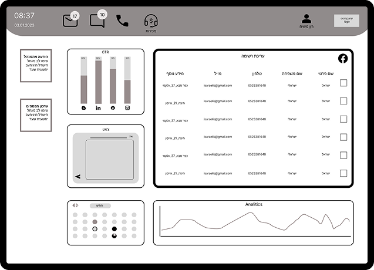
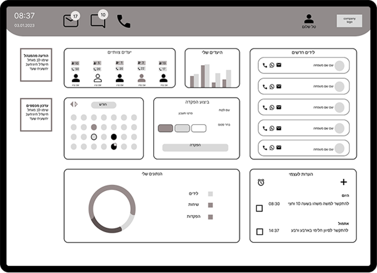
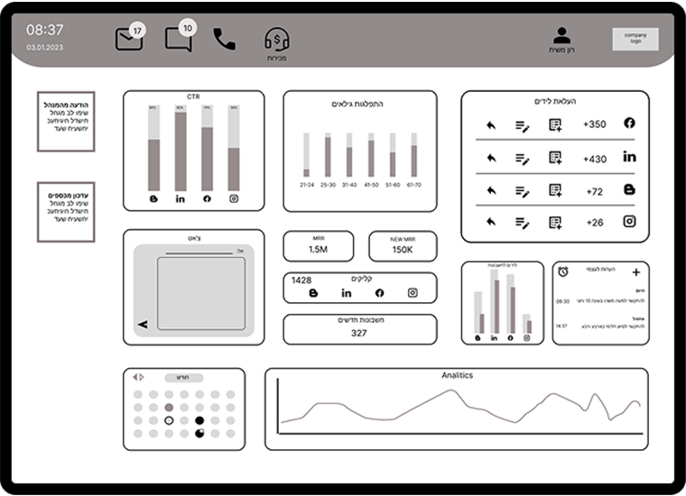
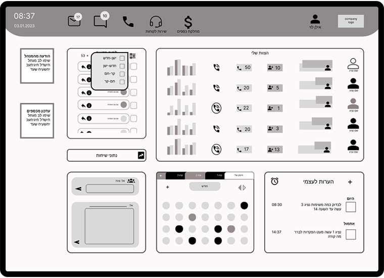

Sales Dashboard: B2B System
Sales Management & Optimization System

The Challenge
The project focused on designing a workspace for a high-intensity trading floor where every second counts. The main challenge wasn't just "digitizing data," but creating a smart and fast workflow:
Minimize Clicks — in older systems, users had to dig through menus to find information. The goal was to bring all critical data to the "front stage."
Smart Visual Hierarchy — the challenge was displaying heavy data (targets, leads, statuses) on a single screen without overwhelming the user or causing cognitive overload.
Immediate Accessibility — ensuring every tool the employee needs (dialer, notes, market data) is instantly available without switching windows.
The goal: to create a single, efficient "cockpit" that centralizes all user needs at a glance.

Designing For Three Roles

The Sales Rep — Efficiency & Focus
Instead of switching between "Clients," "Dialer," and "Targets" screens: a live lead card with built-in action buttons (call, WhatsApp, email) means everything happens with one click from the main dashboard. A personal micro-dashboard is permanently displayed on the side, keeping the rep constantly aware of their performance.

Marketing Manager — Macro Control
Instead of managing dozens of separate Excel files, a unified screen centralizes all incoming leads and allows quick assignment to teams. Visual charts display campaign quality clearly, eliminating the need for complex spreadsheet analysis.

Team Lead / VP — Transparency & Control
Instead of guessing who is available: the manager sees in real time who is on a call and who is available, with simple status indicators. Inter-departmental connectivity allows quick contact buttons to reach related departments (like Customer Support or Finance) directly from the system.
The Process
1. Task Analysis — mapping the most frequent actions for each role (based on the brief) to understand what must be displayed on the main dashboard.
2. System Research — benchmarking advanced dashboards and management systems to learn how to organize heavy data with a clean UI.
3. Layout Strategy — creating wireframes that place the most critical information at the center of the screen, with secondary tools in the periphery, to prevent visual clutter and maintain orientation.
Outcome
The result is a system that drastically improves workflow efficiency. By eliminating the need for "deep navigation" and surfacing critical information on the main dashboard, users can focus on their core tasks rather than operating the system.